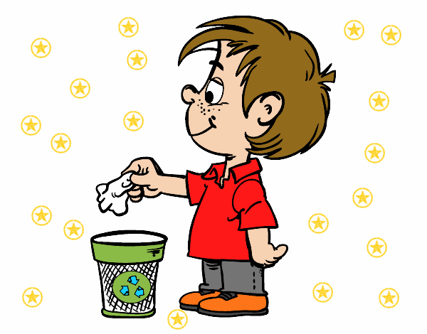
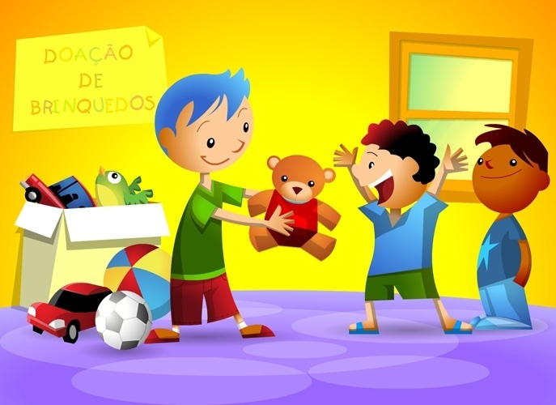
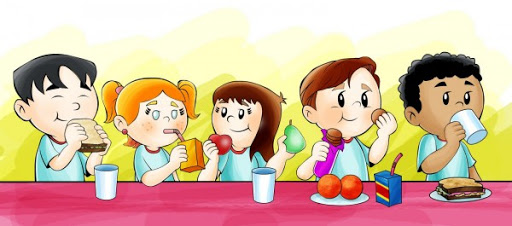

Existem várias maneiras de cuidar do planeta em que vivemos. Uma delas é
buscar alternativas para o consumo em excesso. Afinal, levante a mão quem
nunca foi às compras como opção de lazer. Mas será que é preciso sempre
consumir para se divertir?
Vocês já ouviram falar em consumo sustentável? A seguir, as nossas dicas
de atividades divertidas e simples para fugir de programas caros para o
bolso e para o meio ambiente.
Vamos invadir as ruas de brincadeiras?
Que tal desligarmos um pouco a tevê, a internet e sairmos para rua em busca
de espaços divertidos para brincar? Além de não gastar quase nada, um passeio
na praça ou no parque pode nos ajudar a fazer novos amigos e aprender
brincadeiras diferentes.
A cidade é nossa! Portanto, devemos invadir as ruas ocupando os espaços
públicos com muitas brincadeiras e alegria, mas lembrando sempre de cuidar
do que é de todos então... nada de lixo na rua!

Desligue os botões e entre em contato com a natureza.
Praias, bosques, trilhas, lagos, rios. Tudo isso existe em nossas vidas,
mas parece esquecido. Que tal fingir que é um detetive e redescobrir
espaços ao ar livre para brincar? A curiosidade e a imaginação podem nos
levar a lugares nunca antes experimentados ou vividos. Muitas vezes é
preciso desligar os botões da tevê, da internet e dos jogos eletrônicos
redescobrir novidades da natureza e de nossa imaginação.
Que tal chamar aquele amiguinho para brincar e começar essa aventura cheia
de surpresas, agora?
Eu quero ou eu preciso?
Vocês já pararam para pensar de onde vem nossa vontade de comprar alguma
coisa? Será que tudo o que é anunciado na tevê nos interessa de verdade
ou é desejo passageiro? Será que realmente precisamos de todas essas
coisas e podemos comprar tudo que queremos?
Por isso, que tal combinar primeiro o que vamos comprar ou se vamos comprar
algo antes de ir passear num shopping ou supermercado? Assim ninguém fica
triste; pais ou crianças.
#Fica a Dica!
Outra ideia bem bacana é fazer uma economia junto com nossos pais e guardar
esse dinheiro em um cofrinho bem legal que podemos fazer com algo que já
temos em casa, para então comprar alguma coisa que queremos muito ou escolher
uma data bem especial para esse presente como Aniversário, Dia das crianças ou Natal!
Ganhou, doou!

Para cada brinquedo ou roupa nova que ganhar ou comprar que tal doar aquilo
ficou antigo para outras crianças? E o mais legal é que para o novo dono,
tudo será novo de novo! Vale experimentar porque essa moda pode pegar!
Trocar pode ser muito mais divertido do que comprar...
Vocês sabiam que as crianças de outros países adoram trocar coisas em feiras?
Muitas vezes famílias ou grupos de amigos organizam feiras de trocas em espaços
públicos como praças, igrejas ou parques. A ideia é muito simples: basta escolher
um tema – roupas, material escolar, jogos, brinquedos, sapatos – e levar aquilo
que não usamos ou não gostamos mais para trocar por outros itens. A única regra
é querer trocar. E tudo isso pode ficar muito mais divertido se cada participante
levar um prato com comidinhas gostosas. Topam?
Sabia que lanches mais saudáveis podem gerar menos lixo?
Frutas, sucos naturais e sanduiches feitos em casa são boa opção para
nossa saúde e para natureza. Uma boa ideia é tentar escolher nossos lanches não
pelo personagem, mas pelas coisas boas que esses alimentos podem trazer para nossa
saúde. Usar lancheiras ou potinhos também contribui para diminuir o lixo!

Vamos tentar dar um final feliz para as embalagens?
Quase tudo que compramos hoje vem dentro de uma embalagem que pode ser caixa,
garrafa, saquinho ou lata. E para onde vão todas essas caixas? Para o lixo!
Agora, será que não podemos ser um destino mais feliz para elas? Claro que sim!
Uma ideia é separar as embalagens pelo seu material (plástico, vidro, papel e
metal) antes de jogarmos no lixo, pois assim elas poderão ser recicladas e
transformadas em coisas novas. Outra ideia é reutilizar as embalagens: caixas,
por exemplo, podem ser uteis depois de vazias. Crie, invente, use de novo!